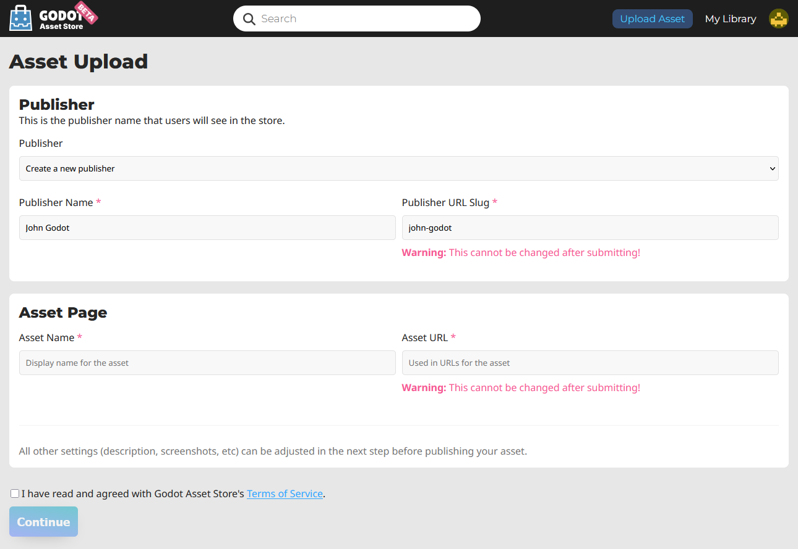

Submitting to the Asset Store
Introduction
This tutorial aims to serve as a guide on how you can submit your own assets to the Godot Asset Store and share them with the Godot community.
As mentioned in the Using the Asset Store Website page, in order to be able to submit assets to the Asset Store, you need to have a registered account, and be logged in.
Submission guidelines
Before submitting your asset, please ensure it follows all of the requirements, and also consider following the recommendations.
Requirements
Generally speaking, most assets people submit to the Asset Store are accepted. However, in order for your asset to be accepted, there are a few requirements it needs to meet to be approved.
The asset must work. If the asset doesn't run or otherwise doesn't work in the specified Godot version, then it will be rejected.
The asset must have a proper .gitignore file. It's important to keep redundant data out of the repository. Here's a template.
No submodules, or any submodules must be non-essential. GitHub does not include submodules in the downloaded ZIP file, so if the asset needs the contents of the submodule, your asset won't work.
The license needs to be correct. The license listed on the Asset Store must match the license in the repository. The repo must have a license file, called either "LICENSE" or "LICENSE.md". This file must contain the license text itself and a copyright statement that includes the year(s) and copyright holder.
Use proper English for the name and description of your asset. This includes using correct capitalization, and using full sentences in the description. You can also include other languages, but there should at least be an English version.
The icon link must be a direct link. For icons hosted on GitHub, the link must start with "raw.githubusercontent.com", not "github.com".
Recommendations
These things are not required for your asset to be approved, but if you follow these recommendations, you can help make the asset store a better place for all users.
When creating non-project assets, it is common practice to place your files inside of an addons/asset_name/ folder. Do this to avoid having your files clash with other assets, or with the files of users installing your asset. This folder will not be automatically generated when a user installs your asset.
Fix or suppress all script warnings. The warning system is there to help identify issues with your code, but people using your asset don't need to see them.
Make your code conform to the official style guides. Having a consistent style helps other people read your code, and it also helps if other people wish to contribute to your asset. See the GDScript style guide or the C# style guide.
If you have screenshots in your repo, place them in their own subfolder and add an empty .gdignore file in the same folder (note: gd, not git). This prevents Godot from importing your screenshots. On Windows, open a command prompt in the project folder and run
type nul > .gdignoreto create a file whose name starts with a period.If your asset is a library for working with other files, consider including example files in the asset.
Consider adding a .gitattributes file to your repo. This file allows giving extra instructions to Git, such as specifying line endings and listing files not required for your asset to function with the
export-ignoredirective. This directive removes such files from the resulting ZIP file, preventing them from being downloaded by Asset Store users. These are common examples of .gitattributes:# Normalize line endings for all files that Git considers text files. * text=auto eol=lf
# Normalize line endings for all files that Git considers text files. * text=auto eol=lf # Only include the addons folder when downloading from the Asset Store. /** export-ignore /addons !export-ignore /addons/** !export-ignore
If you are submitting a plugin, add a copy of your license and readme to the plugin folder itself. This is the folder that users are guaranteed to keep with their project, so a copy ensures they always have those files handy (and helps them fulfill your licensing terms).
While the Asset Store allows more than just GitHub, consider hosting your asset's source code on GitHub. Other services may not work reliably, and a lack of familiarity can be a barrier to contributors.
Submitting
Once you are logged in, click on Upload Asset on the top right of the website. It will take you to the following page:

Here is a breakdown of each field:
Publisher: This is the public name associated with the asset. For example, the XR Tools asset has the publisher "Godot XR".
Publisher Name: The name of the new publisher you are creating.
Publisher URL Slug: how the publisher will appear in its link. For example, the XR Tools asset has the following URL:
https://store.godotengine.org/asset/godot-xr/godot-xr-tools/The publisher URL Slug in that is "godot-xr".
Asset Name: The name of your asset. Should be a unique, descriptive title of what your asset is.
Asset URL: How the asset will be named in its link. For example, the XR Tools asset has the following URL:
https://store.godotengine.org/asset/godot-xr/godot-xr-tools/The asset URL for that link is "godot-xr-tools".
After filling out those fields, agree to the terms of service after reading them, and click "Continue". You will be brought to the asset's management page, where you can edit almost everything about how it will appear on the store, as well as upload different versions.

Management pages
Overview
The overview tab lets you submit your asset for review. You can also view analytics including how many times it's been downloaded, page visits, and the number of people who have added it to their library.
You can also delete the asset at the bottom of the page from this tab.
Settings
This tab is where you set up the following general information about your asset:
Asset Summary
Detailed description
Tags
Asset type (Full Project or Addon)
License
Link to source code
AI usage disclosure (This is mandatory if you use AI)
Media
The media tab is where you upload your thumbnail, screenshots, an image for the featured page if you want, and link to a YouTube video if you have one.
Versions
This is where you upload the actual asset files. For each version you upload you can give it a name, write a changelog, and specify the minimum Godot version (and maximum if applicable). There is also an additional information field for anything miscellaneous.
Each individual version has a maximum file size of 1GB.
Pricing
While paid assets can't be uploaded yet, there are some settings relevant to free assets. You can link to another website where you accept donations, such as Patreon or Ko-Fi. You can also disable reviews if you want (in the future paid assets will not have this option).
Submitting for review
Once you are done, press "Submit". Your asset will be entered into the review queue. You will be informed when your asset is reviewed. If it was rejected, you will be told why that may have been, and you will be able to submit it again with the appropriate changes.